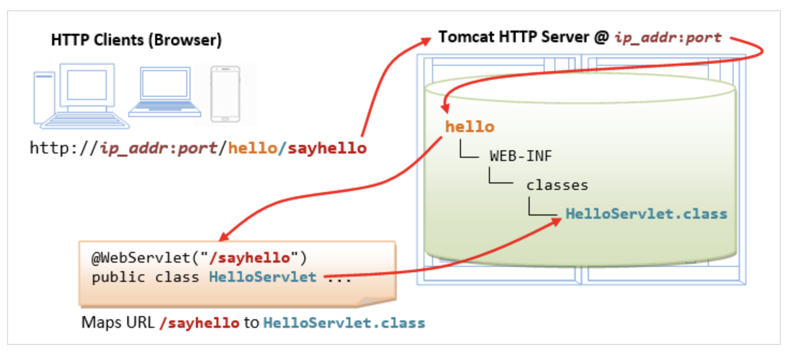
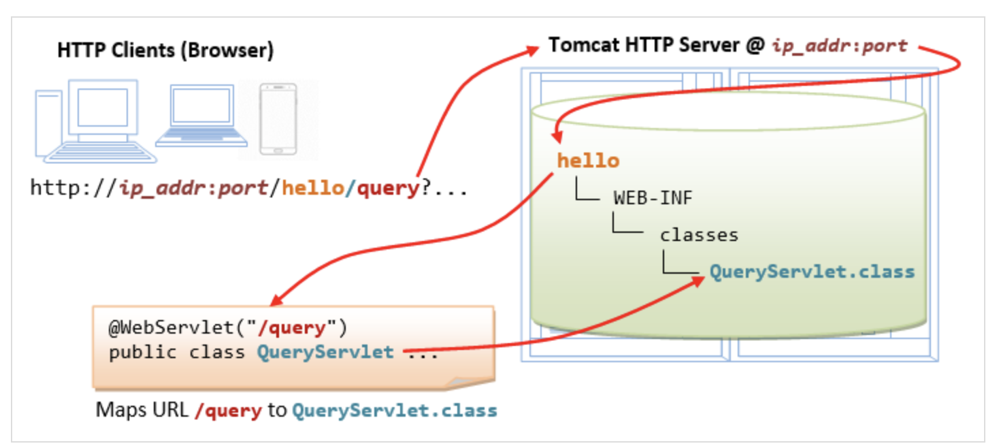

封装数据库连接
回忆
- 我们这次应用数据库连接池
- 制作了一个管理页面
- 这个页面可以查询所有的用户记录
- 并且每个用户后面有一个删除按钮
- 删除应该如何完成呢
- 能否直接就写处理函数
- 让路由在编译class的时候自动生成呢？🤔
自动配置路由

配置参数

import jakarta.servlet.annotation.*;
- 注意这个/指的是app的根下
- 而不是tomcat的根下
- /能省去么？
- 验证一下
不刷新
- 如果不刷新的话
- 需要对于web.xml进行一下修改
- 比如先插一个空格
- 然后来一个退格
- 再保存
- 保存后tomcat会自动加载web.xml
- 从而加载新编译的url位置到class的路由映射
二义性
- 如果两个class都路由到同一个url
- 会导致整个app的失效么？
- 做一下实验
总结
- 我们这次应用数据库连接池
- 制作了一个管理页面
- 这个页面可以查询所有的用户记录
- 并且每个用户后面有一个删除按钮
- 删除应该如何完成呢
- 能否直接就写处理函数
- 让路由在编译class的时候自动生成呢？🤔
- 下次再说！👋